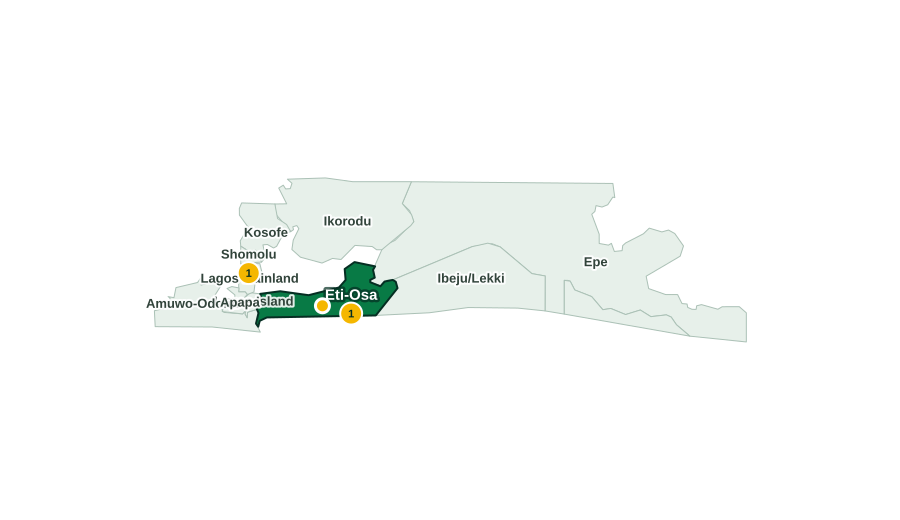

Area191.03 km²
Towns / CommunitiesAdo, Langbasa, Badore, Ajah, Sangotedo, Ikoyi, etc.
Popular LanguagesYoruba, Awori
Popular LandmarksEko Hotel and Suites, Lekki Conservation Centre, Landmark Centre
LagosEti-Osa

Eti-OsaActive issue
Other 1
These outcome figures describe records in the platform. They do not claim that Eti-Osa LGA caused a resolution.
Current reports
Active issues
Other
Flood
First reported 18 Aug 2026 · 0 nearby verifications
Community verification is visible here in the working application. Actions are paused in this portfolio.